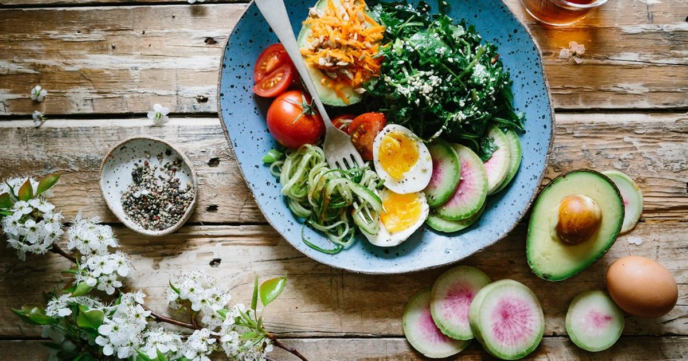

Habits & Recovery
How Much Protein Do You Need for Home Workouts?
The number is lower than the fitness industry says and higher than most people eat. Here is what the research supports, and how to reach it without weighing food.

I am not a dietitian, and this is general information rather than dietary advice. If you have a kidney condition, diabetes, an eating disorder or history of one, are pregnant or breastfeeding, or take medication affected by diet, speak to your GP or a registered dietitian rather than acting on an article. Protein intake is one of the areas where individual circumstances genuinely change the answer.
A caveat about who is telling you this
Protein recommendations come predominantly from two sources with obvious incentives: supplement companies, who benefit from higher numbers, and general health guidance aimed at sedentary populations, which is often lower than what someone training regularly needs.
What follows is drawn from meta-analyses of resistance training studies, which is the most relevant evidence for this specific question.
The number
For someone doing resistance training and wanting to build or maintain muscle, the range supported by the research is roughly 1.4 to 1.6 grams of protein per kilogram of bodyweight per day.
For an 80-kilogram person that is about 112 to 128 grams a day. For a 60-kilogram person, about 84 to 96 grams.
That is roughly double the general population recommendation of around 0.8 g/kg, which is set as an amount sufficient to prevent deficiency rather than to optimise training adaptation. The two numbers answer different questions, which is a large part of why the topic is confusing.
What the research shows
The most directly useful evidence comes from meta-analyses of protein supplementation alongside resistance training.
Morton and colleagues conducted a systematic review, meta-analysis and meta-regression of protein supplementation and resistance training-induced gains in muscle mass and strength.1 Two findings from that work are worth knowing. Protein supplementation does augment gains from resistance training. And the benefit appears to plateau — intakes beyond a certain point did not produce further gains, with the analysis suggesting a plateau in the region of 1.6 g/kg per day.
A later systematic review and meta-analysis by Nunes and colleagues examined protein intake to support muscle mass and function in healthy adults and arrived at broadly consistent conclusions.2
An earlier review by Pasiakos and colleagues examined the effects of protein supplements on muscle mass, strength and power, and found effects that varied with training status — a reminder that these numbers are population averages rather than individual prescriptions.3
Taken together: more protein helps up to a point, and that point is somewhere around 1.6 g/kg for most people doing resistance training. Beyond it, additional protein is not doing harm in healthy people but is not buying additional muscle either.
Does bodyweight training need less?
A reasonable question, since bodyweight training uses lighter loads.
The honest answer is that the research is predominantly on weight training, and I have not seen good evidence that the requirement differs meaningfully. The mechanism — muscle protein synthesis stimulated by resistance exercise — appears similar, and evidence comparing light and heavy loads found comparable hypertrophy when sets were taken close to failure.4
The reasonable working assumption is that if you are training hard enough to build muscle, the protein requirement is similar regardless of where the resistance came from. If you are training twice a week at moderate effort, you are probably closer to the general population figure than to the athletic one.
Hitting it without tracking
The number is only useful if you can reach it without weighing your food, which most people will not sustain.
The practical heuristic: a substantial protein source at every meal. Most people eat three meals, and most protein sources deliver roughly 20 to 35 grams per sensible portion. Three meals with a real protein source lands most people in the right territory without any arithmetic.
Rough figures worth knowing, since a handful of anchors is more useful than a table of hundreds:
| Food | Portion | Approx. protein |
|---|---|---|
| Chicken breast | 150 g | ~45 g |
| Tinned tuna | 1 tin | ~25 g |
| Eggs | 3 large | ~19 g |
| Greek yoghurt | 200 g | ~20 g |
| Tinned lentils | 1 tin | ~20 g |
| Tofu | 150 g | ~18 g |
| Cottage cheese | 200 g | ~24 g |
| Milk | 500 ml | ~17 g |
These are approximations and vary by product; read the label if precision matters to you.
Where people fall short: breakfast, almost universally. A breakfast of toast, cereal or fruit contributes very little, and that missing 25 grams is frequently the whole gap. Fixing breakfast alone moves most people into range — some quick options are in high-protein meals you can make in 15 minutes.
Does timing matter?
Less than it was once thought to.
The idea of a narrow anabolic window immediately after training, within which protein must be consumed, has not held up well. Total daily intake appears to matter considerably more than precise timing around sessions.
What does seem worth doing is distributing intake across the day rather than concentrating it in one meal — roughly similar amounts at each of three or four meals rather than 20 grams at breakfast and 90 at dinner. The evidence here is less firm than for total intake, and it is a reasonable default rather than a rule. More on this in what to eat before and after a workout.
Total daily intake matters. Timing matters less. Breakfast is where almost everyone loses the number.
On protein powder
A convenience product, not a necessity. There is nothing in whey or plant protein powder that food does not provide, and the meta-analyses above examined supplementation largely as a way of increasing total intake rather than because the supplement form was special.
It is genuinely useful if you struggle to reach the number from food, if you have little appetite after training, or if you need something portable. It is not useful if you already hit your intake, in which case it is expensive food.
If you buy it, buy on price per gram of protein rather than on marketing.
Is more better?
Up to about 1.6 g/kg, more is better. Beyond that, the evidence does not support further gains in muscle mass from higher intakes in people doing resistance training.
Higher intakes are not harmful for healthy people with normal kidney function, and the widely repeated claim that high protein damages healthy kidneys is not well supported. But people with existing kidney disease are a genuine exception, and that is a conversation for a clinician rather than an article.
There is one situation where the higher end of the range is worth aiming at: when you are in a calorie deficit. Protein appears to matter more for preserving muscle when energy intake is restricted, which is the argument made in the realistic weight-loss plan.
Where to go next
For meals that hit the number quickly, see high-protein meals you can make in 15 minutes. For the timing question, see what to eat before and after a home workout.
Frequently asked questions
How much protein do I need for bodyweight training?
Roughly 1.4 to 1.6 grams per kilogram of bodyweight per day if you are training to build or maintain muscle. For an 80-kilogram person that is about 112 to 128 grams daily, which is roughly double the general population recommendation.
Is there a point where more protein stops helping?
Yes. Meta-analytic evidence suggests the benefit for muscle gain plateaus in the region of 1.6 grams per kilogram per day. Beyond that, additional protein is not harmful for healthy people but does not appear to buy additional muscle.
Does bodyweight training need less protein than weight training?
There is no good evidence that it does. The research is predominantly on weight training, but the mechanism appears similar and light loads taken close to failure produce comparable muscle growth. If you are training hard enough to build muscle, assume the requirement is similar.
Do I need protein powder?
No. It is a convenience product rather than a necessity, and there is nothing in it that food does not provide. It is genuinely useful if you struggle to reach your intake from food or need something portable, and pointless if you already hit the number.
Does protein timing after a workout matter?
Less than was once thought. The idea of a narrow anabolic window has not held up well, and total daily intake matters considerably more. Distributing intake across three or four meals rather than concentrating it in one is a reasonable default.
Where do most people fall short on protein?
Breakfast, almost universally. Toast, cereal or fruit contributes very little, and that missing 25 grams is frequently the entire gap. Fixing breakfast alone moves most people into range.
Sources and further reading
- Morton RW, Murphy KT, McKellar SR, et al. “A systematic review, meta-analysis and meta-regression of the effect of protein supplementation on resistance training-induced gains in muscle mass and strength in healthy adults.” British Journal of Sports Medicine, 2018;52(6):376–384. PubMed.
- Nunes EA, Colenso-Semple L, McKellar SR, et al. “Systematic review and meta-analysis of protein intake to support muscle mass and function in healthy adults.” Journal of Cachexia, Sarcopenia and Muscle, 2022;13(2):795–810. PubMed.
- Pasiakos SM, McLellan TM, Lieberman HR. “The effects of protein supplements on muscle mass, strength, and aerobic and anaerobic power in healthy adults: a systematic review.” Sports Medicine, 2015;45(1):111–131. PubMed.
- Schoenfeld BJ, Grgic J, Ogborn D, Krieger JW. “Strength and Hypertrophy Adaptations Between Low- vs. High-Load Resistance Training: A Systematic Review and Meta-analysis.” Journal of Strength and Conditioning Research, 2017;31(12):3508–3523. PubMed.
- World Health Organization. WHO Guidelines on Physical Activity and Sedentary Behaviour. 2020.
Comments
Comments are not enabled yet. Add a hosted comment embed (Disqus, Commento, Giscus) inside this container when you are ready.